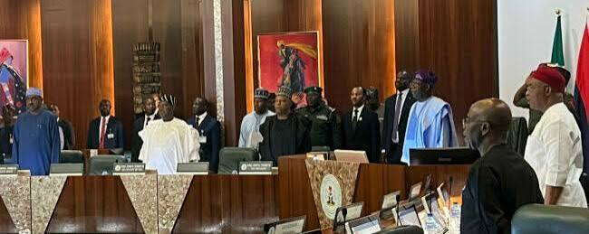
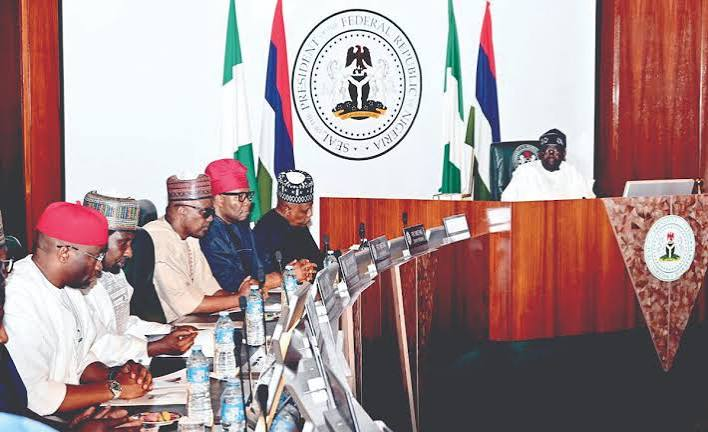
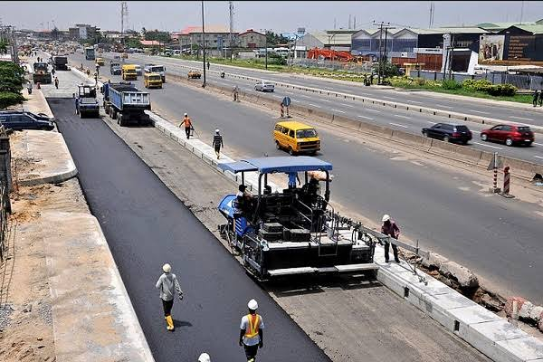
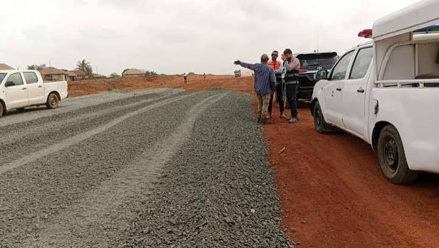
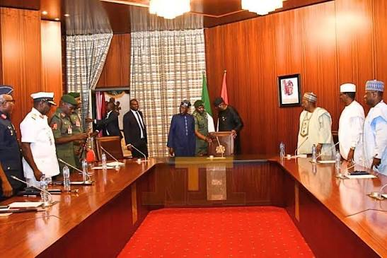
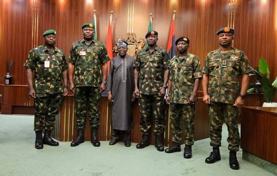
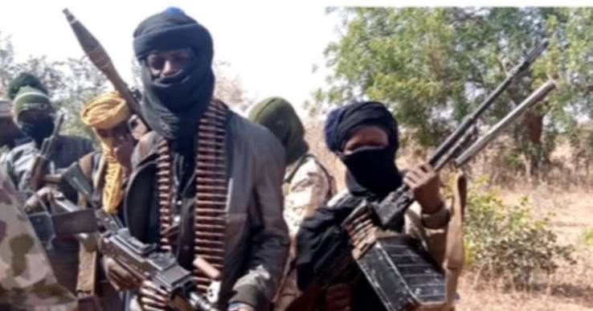

Get the latest updates from Aso Rockm, Federal Executive Council meetings, government politices, national development projects and political affairs shaping the future of Nigeria.


The President met with ministers at the Presidential Villa in Abuja to discuss national development, economic reforms, security, and infrastructure projects across the country. During the meeting, members of the Federal Executive Council reviewed the progress of ongoing government programs and considered new initiatives aimed at improving the quality of life for Nigerians. A major topic of discussion was the construction and rehabilitation of federal roads, bridges, and railways to improve transportation and encourage economic growth. The ministers also discussed expanding electricity supply to more communities and improving access to clean water, especially in rural areas. Better infrastructure is expected to support businesses, create employment opportunities, and make it easier for farmers and traders to move their goods across the country. The council also focused on the nation’s economy by reviewing policies designed to control inflation, encourage local production, and attract both local and foreign investment. Government officials emphasized the importance of supporting small and medium-sized enterprises (SMEs) through access to loans, training programs, and business-friendly policies. These efforts are intended to help entrepreneurs grow their businesses and create more jobs for young people. Security was another important issue discussed during the meeting. The President received updates from security agencies on ongoing operations to tackle terrorism, banditry, kidnapping, and other criminal activities. The government reaffirmed its commitment to strengthening security across the country by providing better equipment, training, and intelligence support to security personnel. A safer environment will allow farmers to return to their farms, encourage investment, and improve daily life for citizens.


The Federal Government has approved the rehabilitation and expansion of key roads along the Lagos–Ikeja highway as part of its commitment to improving transportation and supporting economic development across Nigeria. The project is designed to ease traffic congestion, improve road safety, and provide a smoother travel experience for commuters and businesses that depend on the busy highway every day. During a meeting at the Presidential Villa in Abuja, President Bola Ahmed Tinubu emphasized the importance of investing in modern infrastructure to strengthen the nation’s economy. He noted that good roads are essential for connecting communities, supporting businesses, and improving the movement of people and goods. The Lagos–Ikeja highway serves as one of the busiest transport corridors in the country, linking residential areas, commercial centers, and industrial zones. The rehabilitation project includes resurfacing damaged sections of the road, improving drainage systems to reduce flooding during the rainy season, installing modern streetlights, repairing bridges where necessary, and upgrading road markings and traffic signs. These improvements are expected to make the highway safer and more efficient for motorists, commercial drivers, and pedestrians. Government officials explained that the project is expected to create employment opportunities for engineers, construction workers, suppliers, and other professionals involved in the construction process. Local businesses operating along the highway may also benefit from increased economic activity during and after the completion of the project. Residents and road users have welcomed the initiative, expressing hope that the improved road network will reduce travel time, lower vehicle maintenance costs caused by poor road conditions, and encourage more investment in the area. The government also assured Nigerians that contractors would be monitored closely to ensure the project is completed according to approved standards and within the expected timeframe.


The security agencies briefed the President on the current security situation across the country during a high-level meeting at the Presidential Villa. The meeting brought together the heads of the military, police, intelligence agencies, and other security institutions to assess ongoing security challenges and develop strategies to improve national safety. During the briefing, the security chiefs informed the President about their operations against terrorism, banditry, kidnapping, armed robbery, and other criminal activities. They highlighted recent successes, including the arrest of criminal suspects, rescue of kidnapped victims, and recovery of illegal weapons. They also identified areas where security threats remain significant and requested additional support in terms of funding, equipment, and intelligence. The President directed the agencies to strengthen collaboration by sharing intelligence, conducting joint operations, and responding more quickly to security threats. He emphasized the need to protect the lives and property of Nigerians while ensuring that security personnel uphold professionalism and respect for human rights. To address insecurity, the security agencies proposed several measures, including: * Intensifying intelligence gathering to detect and prevent attacks before they occur. * Increasing joint military and police operations in security hotspots. * Deploying modern surveillance technology, including drones and communication systems. * Strengthening border security to prevent the movement of illegal arms and criminal groups. * Recruiting and training more security personnel to improve response times. * Working closely with local communities to gather information and build public trust. * Collaborating with neighboring countries to combat cross-border crimes and terrorism. * Addressing the root causes of insecurity, such as unemployment, poverty, and youth involvement in crime, through government development programmes. The meeting ended with a renewed commitment from both the President and the security agencies to restore peace, improve public confidence in the nation’s security system, and ensure a safer environment for all Nigerians.

Bandits reportedly attacked a group of students, causing panic and confusion. The incident left several students injured, while others were reportedly abducted by the attackers. Security agencies have launched efforts to rescue the victims and restore calm in the affected area.
Ministers reviewed projects relating to healthcare, education, transportatuion and housing.
The Presidency contiunes to improve online governmentservices for easier access by citizens.
Naija politics is a news platform dedicated to reporting activities from Nigeria's GovernmentHouse, the Presidencyand other important political developments across the country.
Email: jonahgodwin08@gmail.com
Phone +234 81 4750 5610
Address: Abuja, Federal Capital territory, Nigeria.